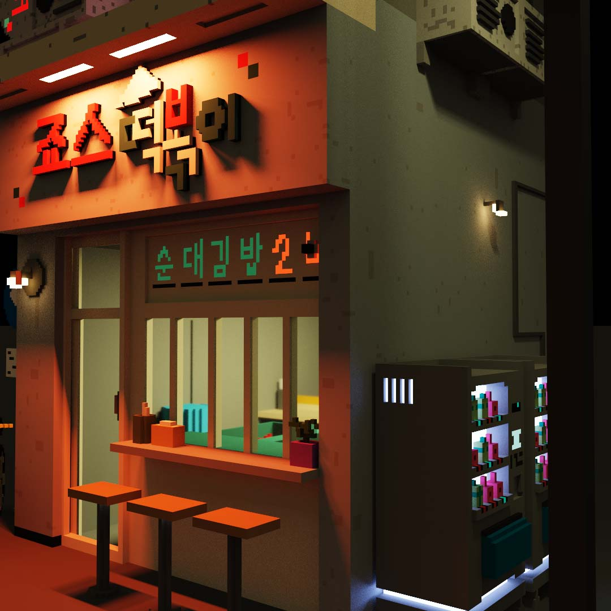
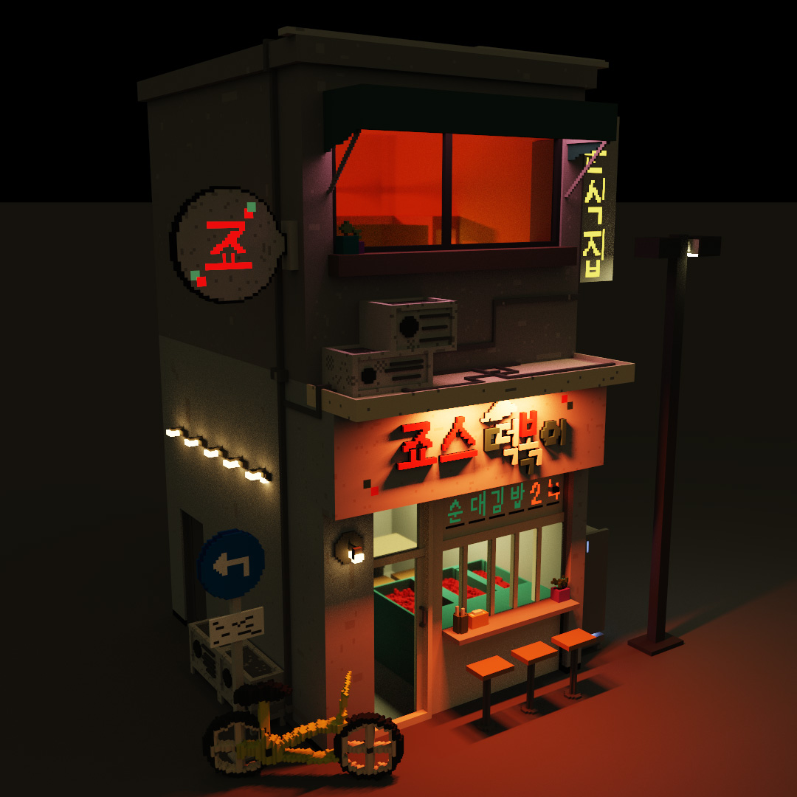
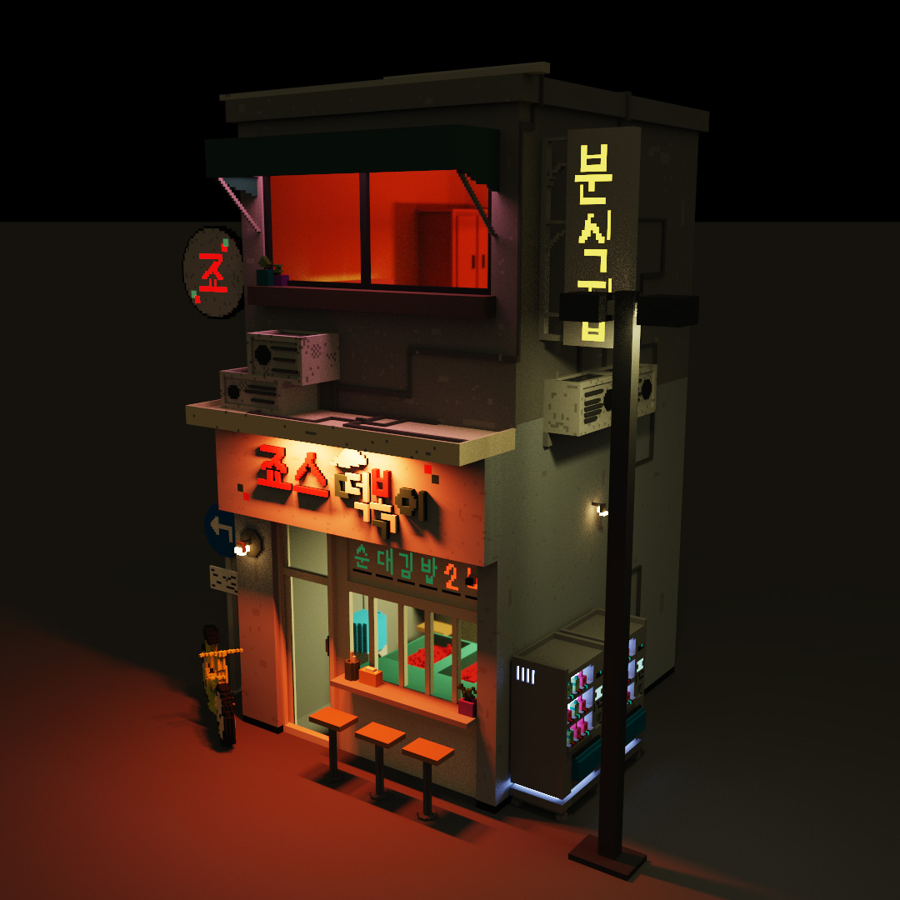
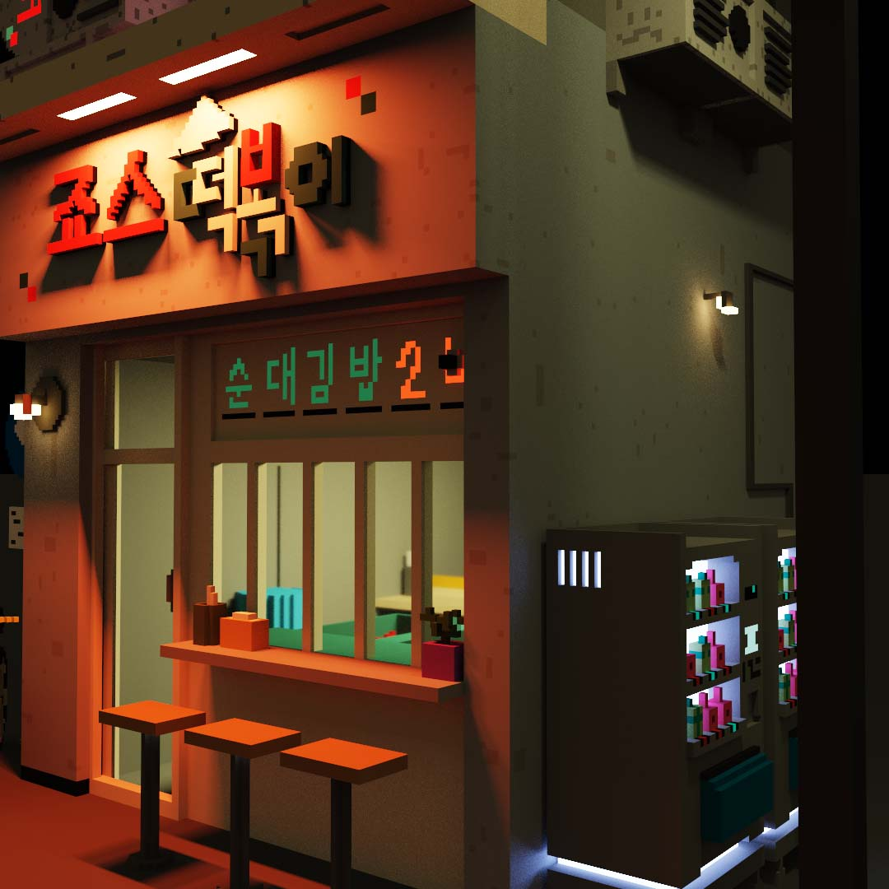
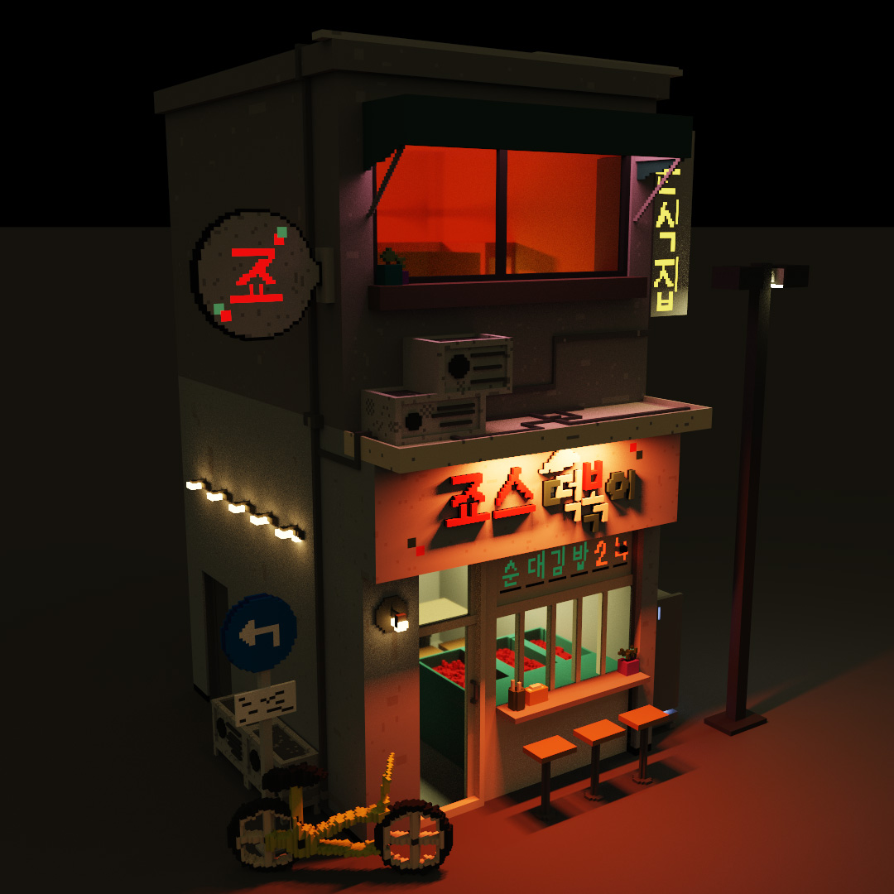
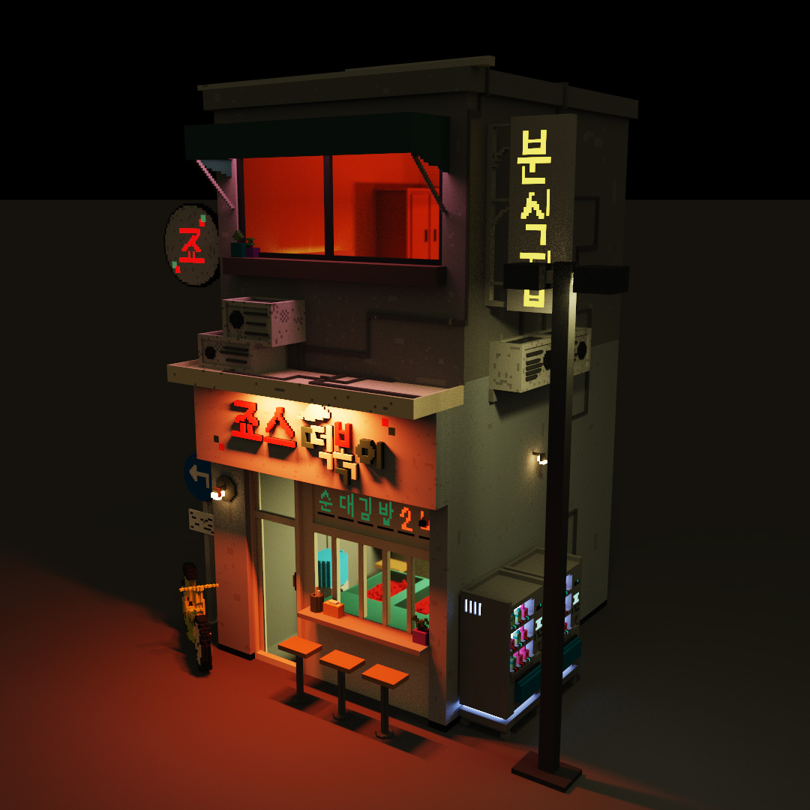

After moving to the United States from South Korea in 2015, I wanted to reconnect with the memories of my childhood through art.
This project explores 3D modeling as a way to recreate some of my favorite places from my early years, capturing the warmth and nostalgia of home through detailed digital environments.
 




